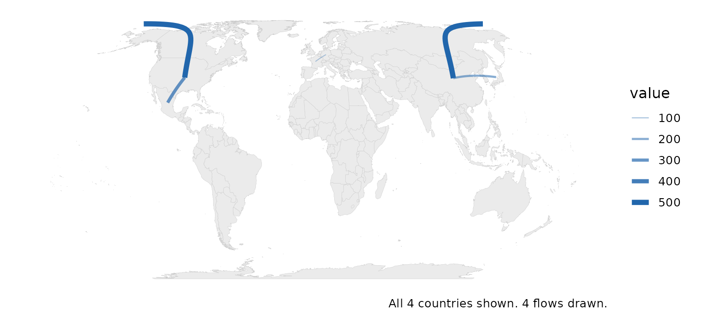
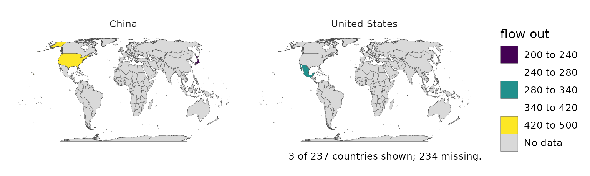

Flows, networks and subnational data
Source:vignettes/articles/flows-networks-subnational.Rmd
flows-networks-subnational.RmdOrigin-destination data – trade, migration, remittances – keys on two
countries per row. flow_matrix() and
country_network() reconcile both ends on the ISO spine;
flow_map() and od_map() draw them.
od <- data.frame(from = c("China", "China", "Germany", "United States"),
to = c("United States", "Japan", "France", "Mexico"),
value = c(500, 200, 80, 300))
flow_matrix(od, from, to, value)
#> CHN DEU FRA JPN MEX USA
#> CHN 0 0 0 200 0 500
#> DEU 0 0 80 0 0 0
#> FRA 0 0 0 0 0 0
#> JPN 0 0 0 0 0 0
#> MEX 0 0 0 0 0 0
#> USA 0 0 0 0 300 0
flow_map(od, from, to, value)
od_map(od, from, to, value, origins = 2)
Below the country, standardize_subnational(),
nuts_geometry() and subnational_map() do the
same for regions (NUTS in Europe, ISO 3166-2 elsewhere); see their help
pages.